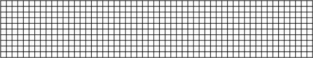
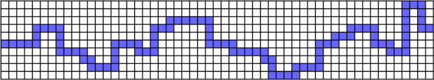
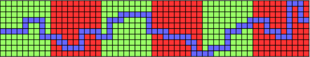
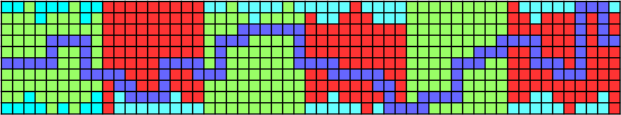
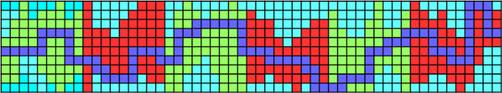
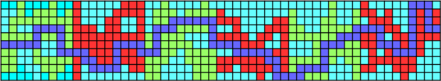

地形自動生成
大まかな生成方法説明。
ソースコードは Classes\Data\MapData\MapData.cpp参照

マップ自動生成したい範囲をマス目状に区切る。
マス目のサイズはキャラクターが移動できるサイズにする。

マス目の左端から右端までマス目上でランダムに線を結ぶ。
このマス目には壁を配置しないようにする。
これによりプレイヤーはマップを端から端まで通り抜けられることが保証される。

マップを一定間隔でエリア分けする。
エリア毎に作成する地形や出現する敵の種類、数をランダムに決める。

天井と床の地形を作成する。

山地形を作成する。

上下の地形の間に岩地形を作成する。